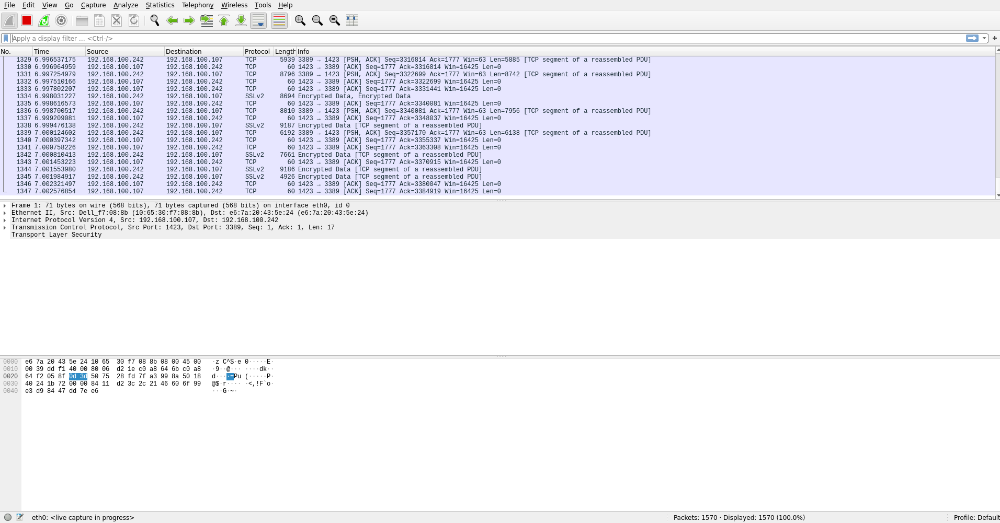

Wireshark is very similar to tcpdump, but has a graphical front-end, plus some integrated sorting and filtering options.
Wireshark lets the user put network interface controllers into promiscuous mode (if supported by the network interface controller), so they can see all the traffic visible on that interface including unicast traffic not sent to that network interface controller's MAC address. However, when capturing with a packet analyzer in promiscuous mode on a port on a network switch, not all traffic through the switch is necessarily sent to the port where the capture is done, so capturing in promiscuous mode is not necessarily sufficient to see all network traffic. Port mirroring or various network taps extend capture to any point on the network. Simple passive taps are extremely resistant to tampering.
If a remote machine captures packets and sends the captured packets to a machine running Wireshark using the TZSP protocol or the protocol used by OmniPeek, Wireshark dissects those packets, so it can analyze packets captured on a remote machine at the time that they are captured.
